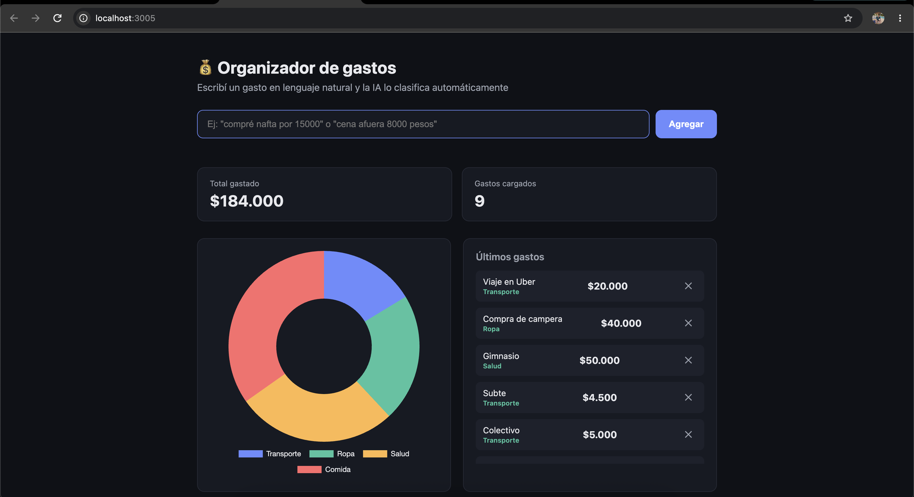

Escribís un gasto como lo pensás y la IA lo ordena por vos.
Al principio no se me ocurría qué hacer. Quería construir algo que me sirviera en la vida cotidiana, y anotar gastos siempre me resultó tedioso: elegir categoría, cargar el monto, ordenar todo a mano. Así que decidí que la IA hiciera esa parte.

Lo usé para pensar la idea, planificar la estructura y escribir el código, conversando en lenguaje natural.
Cada gasto se le envía a este modelo de lenguaje, que lo interpreta y devuelve los datos ordenados.
Recibe los gastos, habla con la IA y los guarda en un archivo, sin necesidad de una base de datos.
Una página web simple, con un gráfico de torta que se actualiza con cada gasto nuevo.
Con Claude Code definí la idea y la estructura, y generamos la app completa.
Quise usar la API gratuita de Gemini, pero respondía con error por alta demanda.
Pasé a Grok como IA principal y dejé Gemini como respaldo automático.
Próximas mejoras